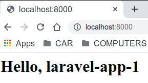
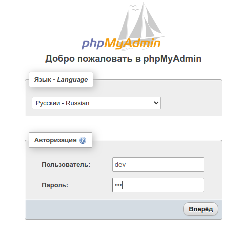

Laravel на Docker контейнерах
Как запустить Laravel приложение на Docker контейнерах
Определим наш минимальный набор сервисов, необходимых для работы с фреймворком Laravel:
- Веб сервер, в нашем случае это Nginx
- php-fpm для обработки скриптов PHP
- база данных MySQL
- база данных Redis
- Node.js для работы с фронтендом
Каждый сервис будет выполняться в отдельном контейнере и в случае если понадобится еще какой-нибудь (например phpMyAdmin) мы его так же сможем запустить в отдельном контейнере. Управлять и конфигурировать эти контейнеры будет Docker Compose. Чтобы не писать каждый раз все с нуля, базовый вариант находится в репозитории.
Клонируйте данный репозиторий в папку ~/my-projects/project-1/laravel-docker-1
cd ~/my-projects/project-1
git clone https://github.com/acwstudio/laravel-docker laravel-docker-1
cd laravel-docker-1
Внутри папки ~/my-projects/project-1/laravel-docker-1 будет следующая файловая структура
| 1. | data/db/mysql/ | volume для сохранения базы данных из контейнера MySQL |
| 2. | data/redis/ | volume для сохранения базы данных из контейнера Redis |
| 3. | etc/db/mysql/ | volume для передачи конфига в контейнер MySQL |
| 4. | etc/nginx/conf.d/ | volume для передачи конфига в контейнер Nginx |
| 5. | etc/php/php.ini | volume для передачи конфига в контейнер PHP |
| 6. | etc/php/Dockerfile | Создание image для контейнера PHP-FPM |
| 7. | etc/redis/ | volume для передачи конфига в контейнер Redis |
| 8. | etc/redis/Dockerfile | Создание image для контейнера Redis |
| 9. | example-files/docker-compose.yml.example | Шаблон для docker-compose.yml файла |
| 10. | example-files/.env.example | Шаблон для .env файла |
| 11. | example-files/laravel.conf.example | Шаблон для nginx.conf файла |
| 12. | example-files/my.cnf.example | Шаблон для my.cnf файла |
| 13. | example-files/php.ini.example | Шаблон для php.ini файла |
| 14. | example-files/redis.conf.example | Шаблон для redis.conf файла |
| 15. | laravel-app/ | volume c кодом Laravel приложения для передачи в контейнеры PHP и Nginx |
Предварительные действия
-
В папке laravel-app/ создаем симлинк
project на код Laravel приложения.
cd ~/my-projects/project-1/laravel-docker-1/laravel-app
ln -s ~/my-projects/project-1/laravel-app-1 project -
Копируем файл example-files/docker-compose.yml.example в
корневую директорию под именем docker-compose.yml
cd ../
cp example-files/docker-compose.yml.example docker-compose.yml
nano docker-compose.yml
Здесь вы можете добавить или удалить сервис. Например, в продакшен точно не нужен phpMyAdmin. Для демонстрации не будем ничего удалять. -
Копируем файл example-files/.env.example в корневую
директорию под именем .env и открываем для редактирования
cp example-files/.env.example .env
nano .env
Оставляем только указанные ниже строки, остальное комментим или удаляем
# App settings
APP_NAME=LarApp1
APP_PATH=./laravel-app/project
# Port Mappings
PORT_DATABASE=3300
PORT_PHPMYADMIN=8080
PORT_HTTP=8000
PORT_HTTPS=8100
PORT_REDIS=6379
# mysql settings
MYSQL_DATABASE=db_1
MYSQL_ROOT_USER=root
MYSQL_ROOT_PASSWORD=root
MYSQL_USER=dev
MYSQL_PASSWORD=dev
# Docker Compose Environment Variables
PHP_VER_FPM=7.2
- Копируем файл example-files/laravel.conf.example в
соответствующую директорию под именем
etc/nginx/conf.d/laravel.conf
cp example-files/laravel.conf.example etc/nginx/conf.d/laravel.conf
nano etc/nginx/conf.d/laravel.conf
Здесь нас все устраивает и ничего менять не будем - Копируем файл example-files/my.cnf.example в
соответствующую директорию под именем
etc/db/mysql/my.cnf
cp example-files/my.cnf.example etc/db/mysql/my.cnf
nano etc/db/mysql/my.cnf
Здесь тоже все устраивает - Копируем файл example-files/php.ini.example в
соответствующую директорию под именем
etc/php/php.ini
cp example-files/php.ini.example etc/php/php.ini
nano etc/php/php.ini
Ничего не меняем - Копируем файл example-files/redis.conf.example в
соответствующую директорию под именем
etc/redis/redis.conf
cp example-files/redis.conf.example etc/redis/redis.conf
nano etc/redis/redis.conf
Здесь мы установим пароль. Файл содержит много справочной информации, поэтому надо приложить некоторые усилия, чтобы найти строку requirepass foobared (~770 line). Раскомментируйте и замените foobared на свой пароль. Мы установим my_redis
На этом предварительные действия закончены.
После проведения подготовки, запускаем docker-compose.yml
docker-compose up -d
В браузере набираем
localhost:8000 для локального компьютера
ip-your-vps:8000 для VPS

В браузере набираем
localhost:8081 для локального компьютера
ip-your-vps:8081 для VPS
